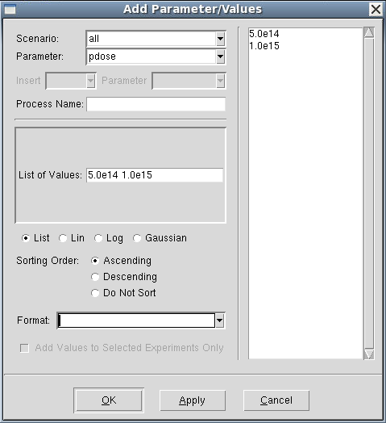

Sentaurus Workbench
4. Building Multiple Experiments
4.1 Adding Parameters
4.2 Setting Up Multiple Experiments
4.3 Creating Scenarios
4.4 Pruning Project Trees
Objectives
- To add parameters and variables.
- To create multiple experiments and scenarios.
4.1 Adding Parameters
In Sentaurus Workbench, parameters can be defined and multiple values can be assigned to them to create splits in experiments (simulations). Each new parameter value creates an additional experiment. Therefore, for N values of a parameter, there are N experiments. For two parameters, P1 and P2, with M and N values, respectively, there are M x N possible experiments.
You will now introduce parameters to the simple project created in Section 3. Creating Projects.
To add parameters:
- Choose Parameter > Add Parameter/Values, or right-click the gray box immediately below the Sentaurus Process icon in the table, and choose Add Parameter/Values.
- In the Add Parameter/Values dialog box, enter the fields as shown in Figure 1.
- Click OK.
Figure 1. Add Parameter/Values dialog box for specifying the pdose parameter.
Repeat this procedure to create another parameter called penergy with the default value of 40. The Project tab should now look like Figure 2. Note that Sentaurus Workbench added virtual nodes (light blue) to represent a possible future split.
{kind=link}
Figure 2. Project tab showing new parameters. (Click image for full-size view.)
The parameters pdose and penergy are defined but are not used yet. To use them, open the Sentaurus Process input file with a text editor, and replace the line:
implant phosphorus dose=5e14 energy=40
with:
implant phosphorus dose=@pdose@ energy=@penergy@
The constructs @pdose@ and @penergy@ are placeholders for the parameters in the input file. Sentaurus Workbench replaces them with the actual value of the parameters during the preprocessing stage.
To preprocess the project:
- Choose Project > Operations > Preprocess, or press Ctrl+P.
You will be prompted to save the project.
{kind=link}
Figure 3. Preprocessor Log dialog box. (Click image for full-size view.)
You can use the Node Explorer (see Section 2.5 Displaying Node Output and Node Information) to view the input file for node 1 (pp1_fps.cmd) and to see that the parameters have indeed been replaced by their respective values for node 1.
Sentaurus Workbench automatically preprocesses a project when you click the OK button of the Run Project dialog box. Therefore, manual preprocessing is not necessary most of the time.
4.2 Setting Up Multiple Experiments
To add multiple values for a parameter:
- Right-click the parameter name and choose Add Parameter/Values.
For the parameter penergy, enter the values using linear progression, as shown in Figure 4.
It is sufficient to enter only three of the four values for linear or logarithmic progressions. The fourth value is computed automatically. In addition, you can choose the sorting order for parameter values by selecting the required option.
Figure 4. Add Parameter/Values dialog box to add multiple parameter values for the penergy parameter as a linear progression.
For the parameter pdose, enter values in the List of Values field as shown in Figure 5.

Figure 5. Add Parameter/Values dialog box to add multiple parameter values for the pdose parameter as a list.
After you have finished adding parameters, you should clean up the project.
To clean up a project:
- Choose Project > Operations > Clean Up, or press Ctrl+L.
- In the Cleanup Options dialog box, select the Renumber the Tree option to renumber the nodes correctly (see Figure 6).
Figure 6. Cleanup Options dialog box.
Then, press the F9 key to display the node numbers, and preprocess the project by pressing Ctrl+P. The Project tab should look like Figure 7.
{kind=link}
Figure 7. Project tab with experiments. (Click image for full-size view.)
When the project modifications are finished, you can save them by choosing Project > Save, or pressing Ctrl+S.
In addition to the list and the linear distributions, you can define a logarithmic or Gaussian distribution for parameter values. The illustration of the penergy parameter value distribution, which follows the Gaussian distribution around the mean value 40 inside a given range, is shown on Figure 8.
Figure 8. Add Parameter/Values dialog box to add multiple parameter values for penergy parameter as a Gaussian distribution.
4.3 Creating Scenarios
With several values for the project parameters, the total number of experiments (the possible simulations for each combination of the parameter values) can become very high. You can run all of them or make subsets of the experiments called scenarios. The entire set of experiments constitutes the scenario all.
In addition, you can copy a set of experiments to create a dedicated scenario and run the experiments individually. To illustrate this, create a scenario called high_energy, consisting of experiments with implantation energies higher than 50 keV.
To create a scenario (see Figure 9):
- Choose Scenario > Add.
- In the Name field, type: high_energy
- Select Activate Experiments Matching.
- From the Parameter list, select penergy.
- From the Operation list, select >=.
- In the Value field, enter 55.
- Select Enable Auto Matching of New Experiments.
- Click OK.
{kind=link}
Figure 9. Add Scenario dialog box. (Click image for full-size view.)
This creates a scenario called high_energy containing experiments with penergy >= 55.
You can switch between existing scenarios by selecting them in the Scenario box in the toolbar (see Figure 10).
Figure 10. Scenario box in toolbar.
Another way to include experiments in a scenario is by individually adding them to a scenario, rather than using an expression. Suppose we want to create a secenario that contains only the experiments 1 and 6. Use the Manage Membership in Scenarios dialog box (see Figure 11) to add the selected experiments to a scenario:
- In the Scenario box, select all.
- Select two experiments that correspond to the low energy value (40 keV) by clicking while holding the Ctrl key.
- Choose Experiments > Manage Membership in Scenarios.
- In the Manage Membership in Scenarios dialog box, click Add New Scenario.
- In the Add Scenario dialog box, enter the scenario name low_energy, and click OK.
- Click OK.
{kind=link}
Figure 11. Experiments added to newly created scenario. (Click image for full-size view.)
The low_energy scenario is created containing the selected experiments (see Figure 12).
Figure 12. Newly created low_energy scenario with selected experiments copied into it.
The creation of different scenarios is particularly helpful when many parameters are used. The resulting experiments can be classified into separate scenarios to reflect realistic situations.
4.4 Pruning Project Trees
Often, when many parameters are used in a project, certain combinations of parameters do not need to be simulated. In such cases, you can prune, that is, remove unnecessary experiments from the project tree.
To prune a project tree:
- Select the nodes.
- Choose Nodes > Configuration > Prune, or press Ctrl+E.
All pruned nodes appear gray and will not be executed (see Figure 13).
If a parent node is pruned, then all subsequent nodes in the project tree branch are pruned automatically.
Figure 13. Some project tree nodes are pruned and will not be executed.
To show or hide pruned nodes:
- Choose View > Tree Options > Show Pruned, or press the F8 key.
To revert pruned nodes:
- Select the nodes.
- Choose Nodes > Configuration > Unprune, or press Ctrl+U.
The project parameters_scenarios is located in the directory Applications_Library/GettingStarted/swb/parameters_scenarios.
Copyright © 2022 Synopsys, Inc. All rights reserved.